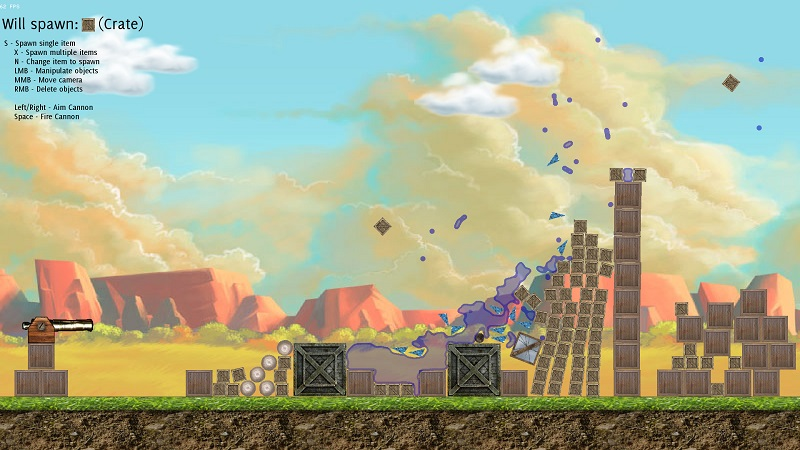

PyNARGE (or Python’s Not A Real Game Engine) is a slightly more abstract 2D game engine than what I’ve seen around in the Python world today: it supports physics, some default shaders (i.e water, blurring, pixellation), GUI elements, entity management, component-based entities and a bunch of other stuff straight off the bat.
PyNARGE’s API has been designed to get a functioning application up and running as quickly as possible. For example, the following code will open a window, load images for a crate, treat it as a physics entity, set a static background & display some info text. The crate will respawn if it falls offscreen; allowing the player another chance to catch it with the mouse if they’re too slow:
from PyNARGE import * # Create a new entity type class Crate(ComponentEntity): # To build this entity def Build(self): # Assign a sprite self.AddComponent( SpriteComponent( self.core.resourceManager.FetchTexture("media\\crate.png") ) ) # Adds physics to this entity self.AddComponent( RigidBody_Rectangular( (16, 16), (100, -100) ) ) # Respawn when offscreen self.AddComponent( RespawnableComponent( lambda x: x.position.y > 900 ) ) # Every frame def Step(self): # Spit out some details to the console print "I am a crate @ " + str(self.position) # Set some options settings = Settings() settings.display_size = Vec2(800, 600) settings.enable_lmb_manipulation = True # Create an app with the options app = GameCore(settings) # Add some text, a background image and finally an instance of our crate app.uiManager.AddEntity( DefaultText("The cube shall fall off the screen unless you catch it!", (300, 480) ) ) app.entityManager.AddEntity( BackgroundImage( app.resourceManager.FetchTexture("media\\background.jpg") ) ) app.entityManager.AddEntity( Crate() ) # Begin the main loop app.Run()Currently, the best way to learn how to use PyNARGE is to read the API docs and example code available. If there’s enough interest, a tutorial series may well be incoming!
- class PyNARGE.ShaderPass(shader, target=None)¶
Allows connection of pyNARGE.Shader instances in ‘passes’, which eventually lead to the display
- Draw(ent)¶
Draw something to the shader pass before processing.
Parameters: ent (A Drawable object) – Drawable to draw
- Initialize(size)¶
Must be executed before the instance can be used. Internally called by pyNARGE.Renderer after pyNARGE.Renderer.AddShaderPass() is called.
Parameters: size – Size of shader surface (almost always pyNARGE.Renderer.GetWindowSize())
- SendToTarget()¶
Executes shader and draws surface to target
- SetCenter(position)¶
Position of the shader’s source, target in global coords. Internally called by pyNARGE.Renderer.SetCamera().
Parameters: position (pyNARGE.Vec2) – Shader’s new center
- SetParameter(parameter, value)¶
Mechanism for setting a ‘uniform’ GLSL shader variables
Parameters:
- parameter (str) – Name of the GLSL variable
- value (float, int, vec2, etc) – Value to set GLSL parameter too
- SetTarget(target)¶
Change the shader’s target draw surface
Parameters: target (Either pyNARGE.Renderer or pyNARGE.ShaderPass instance) – Where this pass should draw to
- class PyNARGE.EngineShaders(core)¶
For getting instances to some standard engine shaders, usually the bottom of a PyNARGE.ShaderPass stack
- GetWaterShader()¶
Returns the engine’s 2D water shader as PyNARGE.ShaderPass. See PyNARGE.WaterParticle for an example usage.
Returns: ShaderPass – the shader instance
- class PyNARGE.pn_entitymanager.EntityManager(core)[source]¶
Manages entities, is responsible for calling their methods
- AddEntity(ent)[source]¶
Add an entity to the entity manager, initializing the entity
Parameters: ent (PyNARGE.Entity) – The entity to add Returns: PyNARGE.Entity – The entity that was added, initialized.
{kind=link}